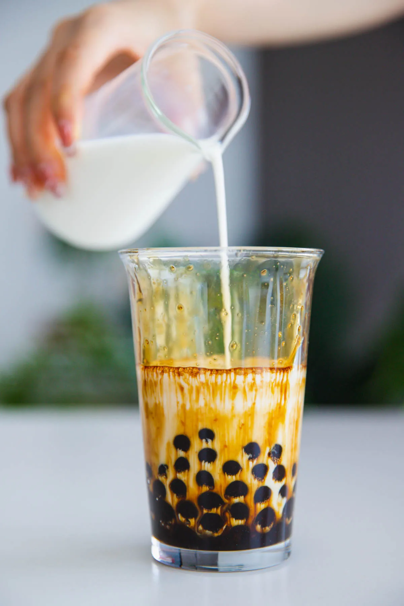
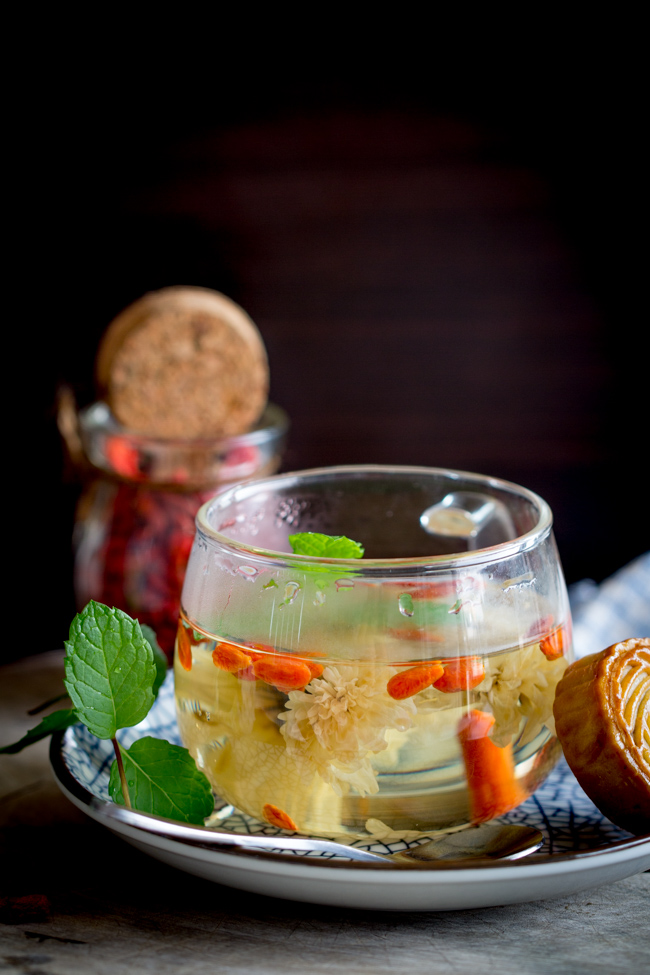

Chinese Beverages
1. Bubble Tea (Boba)

Ingredients:
- 1/2 cup Tapioca pearls
- 1 cup Milk (or dairy-free alternative)
- 1 cup Black tea
- 1 tablespoon Sugar
Instructions:
- Cook the tapioca pearls according to the package instructions.
- Brew the black tea and let it cool.
- Mix the tea, milk, and sugar in a shaker, add ice, and shake well.
- Pour into a glass, add tapioca pearls, and serve with a straw.
2. Traditional Chinese Chrysanthemum Tea

Ingredients:
- 2 tablespoons Dried chrysanthemum flowers
- 1 cup Hot water
- 1 tablespoon Honey (optional)
Instructions:
- Place the dried chrysanthemum flowers into a teapot or cup.
- Pour hot water over the flowers and let steep for 5-10 minutes.
- Sweeten with honey if desired.
- Serve hot or chilled.